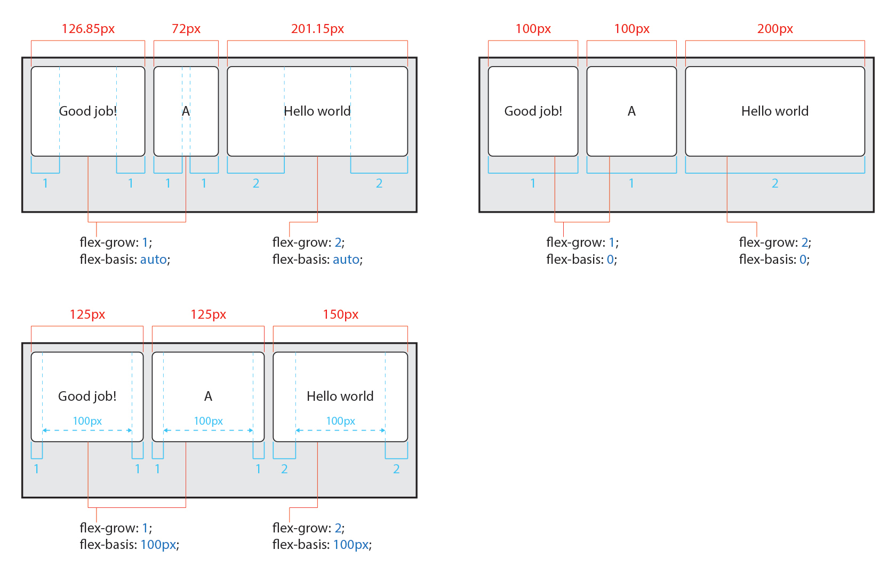
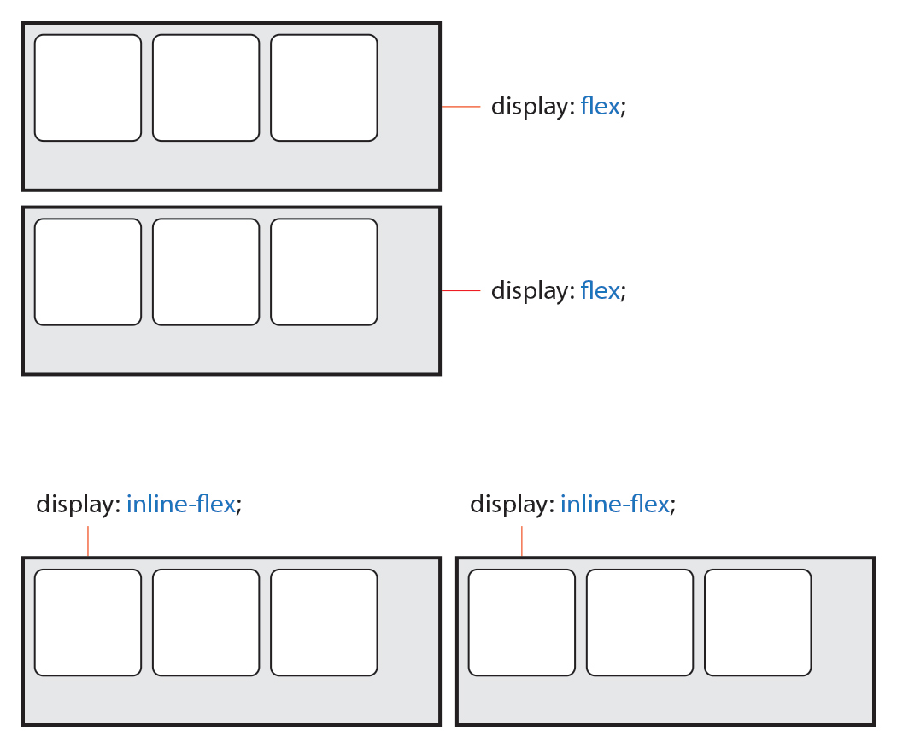
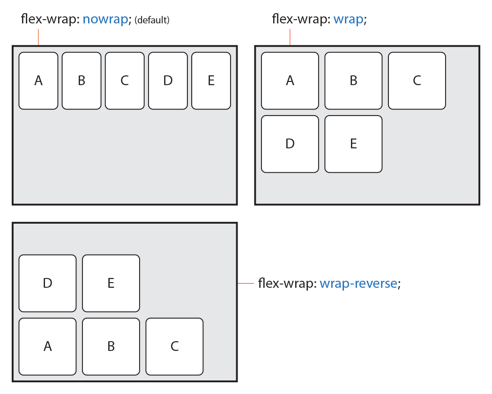
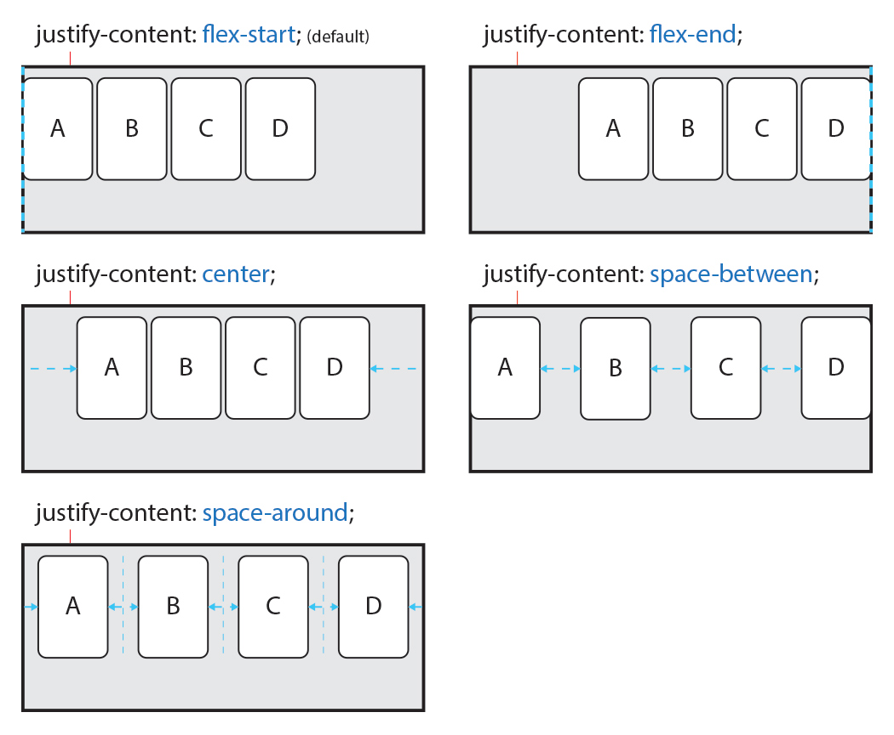

# CSS3 Properties <div id="copyright"></div>
## Flexible Box Layout 요소의 크기가 불분명하거나 동적인 경우에도,<br>각 요소를 정렬(배치)할 수 있는 효율적인 방법를 제공
### `container`와 `items` 플렉스 레이아웃은 부모 요소(`container`)와 자식 요소(`items`)에 적용되는 속성이 구분되어 있음 
## Flex `container`를 위한 속성들 | 속성 | 의미 | |---|---| | `display` | 플렉스 컨테이너를 정의 | | `flex-flow` | `flex-direction` + `flex-wrap` 단축 속성 | | `flex-direction` | 플렉스 아이템들의 주 방향(main-axis)을 설정 | | `flex-wrap` | 플렉스 아이템들의 여러 줄 묶음(줄바꿈) 설정 | | `justify-content` | 주 방향(main-axis)의 정렬(배치) 방법을 설정 | | `align-items` | | | `align-content` | |
### `display` 플렉스 컨테이너를 정의 | 값 | 의미 | 기본값 | |---|---|---| | `flex` | 일반 플렉스 컨테이너를 정의 | | | `inline-flex` | 인라인 특성의 플렉스 컨테이너를 정의 | | > 플렉스 박스 레이아웃을 만드는 첫번째 설정입니다.

### `flex-flow` 플렉스 아이템들의 주 방향(main-axis)을 설정하며,<br>플렉스 아이템들의 여러 줄 묶음(줄바꿈) 설정<span class="property shorthand" title="단축 속성"></span> | 값 | 의미 | 기본값 | |---|---|---| | `flex-direction` | 플렉스 아이템들의 주 방향(main-axis)을 설정 | `row` | | `flex-wrap` | 플렉스 아이템들의 여러 줄 묶음(줄바꿈) 설정 | `nowrap` | ``` flex-flow: 방향 여러줄묶음; ``` ```css flex-flow: row-reverse wrap; ```
### `flex-direction` 플렉스 아이템들의 주 방향(main-axis)을 설정<span class="property individual" title="개별 속성"></span> | 값 | 의미 | 기본값 | |---|---|---| | `row` | 플렉스 아이템들을 수평 방향으로 표시 | `row` | | `row-reverse` | `row`의 수평 반대 방향 | | | `column` | 플렉스 아이템들을 수직 방향으로 표시 | | | `column-reverse` | `column`의 수직 반대 방향 | | ``` flex-direction: 방향; ```
<img src="img/flex-direction.jpg" alt="flex" width="700">
<img src="img/flex-direction-main-axis.jpg" alt="flex" width="700">
### `flex-wrap` 플렉스 아이템들의 여러 줄 묶음(줄바꿈) 설정<span class="property individual" title="개별 속성"></span> | 값 | 의미 | 기본값 | |---|---|---| | `nowrap` | 모든 플렉스 아이템들을 한 줄에 표시 | `nowrap` | | `wrap` | 플렉스 아이템들을 위에서 아래로 여러 줄로 묶음 | | | `wrap-reverse` | 플렉스 아이템들을 아래에서 위로 여러 줄로 묶음 | | ``` flex-wrap: 여러줄묶음; ```

### `justify-content` 주 방향(main-axis)의 정렬(배치) 방법을 설정 | 값 | 의미 | 기본값 | |---|---|---| | `flex-start` | 플렉스 아이템들이 `main-start`(시작점)로 배치됨 | `flex-start` | | `flex-end` | 플렉스 아이템들이 `main-end`(끝점)로 배치됨 | | | `center` | 플렉스 아이템들이 가운데 배치됨 | | | `space-between` | 시작 아이템은 `main-start`에,<br>마지막 아이템은 `main-end`에 배치되고<br>나머지 아이템들은 사이에 고르게 분포함 | | | `space-around` | 각 항목에 균등한 여백을 포함하여 배치 | | ``` justify-content: 정렬방법; ```
